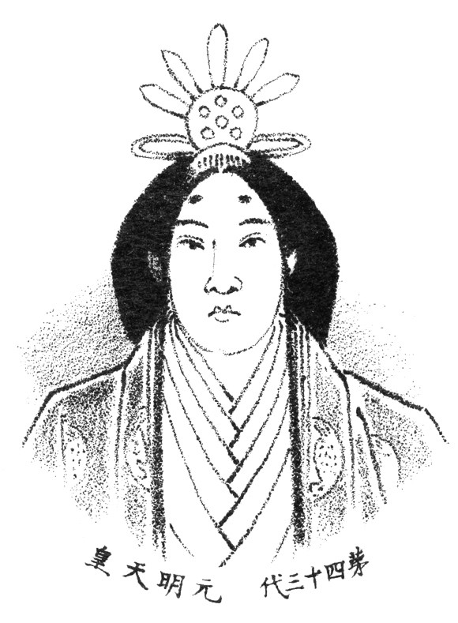

Womens History and Rights in Japan Research
 Around the time
that LGBTQ+ relationships were being questioned, the feminist movement for women in Japan began with
the western influence looming Japan during the Meji Restoration era. This influence brought a lot of
strives for the feminist moving, some strives being the restriction in trafficking women, girls being
required to obtain education, and the right to request divorces. The first association for women’s rights
in Japan, The Red Wave Society, was formed in April 1921. This movement aimed to attack the harsh affects
that capitalism had on women since during this time, many women were either working 12-hour long shifts in
poor conditions or had turned women into slaves or prostitutes (2. Tsurumi, E. Patricia).
Around the time
that LGBTQ+ relationships were being questioned, the feminist movement for women in Japan began with
the western influence looming Japan during the Meji Restoration era. This influence brought a lot of
strives for the feminist moving, some strives being the restriction in trafficking women, girls being
required to obtain education, and the right to request divorces. The first association for women’s rights
in Japan, The Red Wave Society, was formed in April 1921. This movement aimed to attack the harsh affects
that capitalism had on women since during this time, many women were either working 12-hour long shifts in
poor conditions or had turned women into slaves or prostitutes (2. Tsurumi, E. Patricia).
Around the same
time in the 1920, the women’s suffrage movement was in full affect for Japanese women. By 1921, women
were allowed to attend political meetings, but they were still not allowed to vote. After the end of
World War II, in February of 1946, Japanese women were finally granted the right to vote, which is one
of the biggest strides made during this time.
 Towards the end of the 1960s, a new feminist movement came to be, WLM (women’s liberation movement), which was rooted in the idea of Japanese women progressing from being considered second-class citizens(1. Bullock, Allan). This same movement was happening at the same time as other countries, such as the United States, had women fighting for civil rights. One of the main issues WLM aimed to tackle in Japan were reproduction and autonomy rights.
As of 2021, gender
equality still seems far away for Japanese women, this is because of the traditional gender roles
that are still being upheld. These gender roles are boiled down to men being the ‘breadwinner’ while
the women are stay-at-home mothers. Due to these gender roles, the birth rate and the marriage rate
has dropped significantly, a growing problem for not only women but men too as they have reported
feeling inadequate in being able to sustain a family(3. Oi, M.).
Acknowledgements
1-Bullock, Allan; Trombley, Stephen, eds. (1999). The New Fontana Dictionary of Modern Thought (3rd ed.). Harper Collins Publishers. ISBN 978-0-00-255871-6.
2-Tsurumi, E. Patricia (1992). Factory Girls: Women in the Thread Mills of Meiji Japan. Princeton University Press. pp. 132–142.
3-Oi, M. (2021, April 8). Why Japan can't shake sexism. BBC Worklife. from https://www.bbc.com/worklife/article/20210405-why-japan-cant-shake-sexism